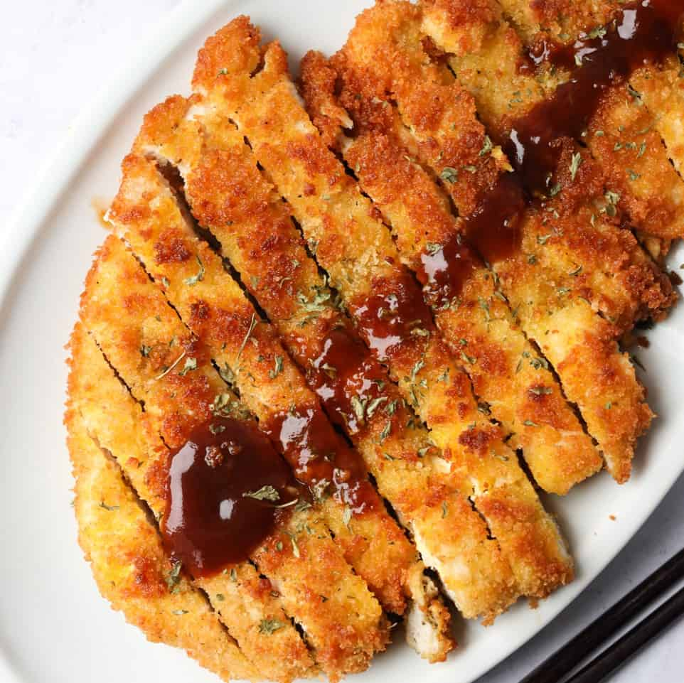

Chicken Katsu

Description
Skinless boneless chicken breast ccoked in flour then seasoned with salt and pepper and fried in a pan full of oil. With a sauce of your choice added.
Ingredients
- 4 skinless, boneless chicken breasts - pounded to 1/2 inch thickness
- Salt and pepper to taste
- 1 egg, beaten
- 1 cup panko bread crumbs
- 1 cup oil, or as needed
Steps
- Season chicken breasts on both sides with salt and pepper. Place flour, beaten egg, and panko crumbs into separate shallow dishes. Coat chicken breasts in flour, shaking off any excess; dip into egg, and then press into panko crumbs until well coated on both sides.
- Heat oil in a large skillet over medium-high heat. Place chicken in the hot oil, and fry until golden brown, 3 or 4 minutes per side. Transfer to a paper towel-lined plate to drain.